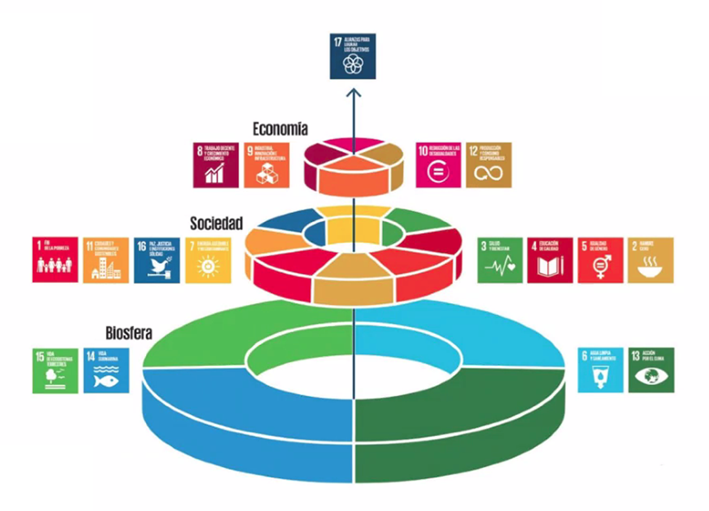

2 Acción por el Clima

El cambio climático está afectando a todos los países de todos los continentes. Está alterando las economías nacionales y afectando a distintas vidas. Los sistemas meteorológicos están cambiando, los niveles del mar están subiendo y los fenómenos meteorológicos son cada vez más extremos, de esto subyace la necesitad de contar con un acuerdo global entre diferentes países.
La Agenda 2030 para el Desarrollo Sostenible, aprobada en septiembre de 2015 por la Asamblea General de las Naciones Unidas, establece una visión transformadora hacia la sostenibilidad económica, social y ambiental de los 193 Estados miembros de las Naciones Unidas que la suscribieron y es la guía de referencia para el trabajo de la comunidad internacional hasta el año 2030.

Se debe comprender que para poder alcanzar los diferentes objetivos de desarrollo sotenible, sedebe contar con una base sólida en este caso es la biósfera Figure 2.1 que como veremos en el presente docuento se encuentra amenazada afectado además a la sociedad y la economía.
2.1 Antecedentes
El Acuerdo de París, aprobado en 2015, aspira a reforzar la respuesta mundial a la amenaza del cambio climático manteniendo el aumento global de la temperatura durante este siglo muy por debajo de 2 grados Celsius con respecto a los niveles preindustriales. El acuerdo también aspira a reforzar la capacidad de los países para lidiar con los efectos del cambio climático mediante flujos financieros apropiados, un nuevo marco tecnológico y un marco de desarrollo de la capacidad mejorado.
2.2 Metas Objetivo Nº 13
13.1 Fortalecer la resiliencia y la capacidad de adaptación a los riesgos relacionados con el clima y los desastres naturales en todos los países 13.2 Incorporar medidas relativas al cambio climático en las políticas, estrategias y planes nacionales
13.3 Mejorar la educación, la sensibilización y la capacidad humana e institucional respecto de la mitigación del cambio climático, la adaptación a él, la reducción de sus efectos y la alerta temprana
13.a Cumplir el compromiso de los países desarrollados que son partes en la Convención Marco de las Naciones Unidas sobre el Cambio Climático de lograr para el año 2020 el objetivo de movilizar conjuntamente 100.000 millones de dólares anuales procedentes de todas las fuentes a fin de atender las necesidades de los países en desarrollo respecto de la adopción de medidas concretas de mitigación y la transparencia de su aplicación, y poner en pleno funcionamiento el Fondo Verde para el Clima capitalizándolo lo antes posible
13.b Promover mecanismos para aumentar la capacidad para la planificación y gestión eficaces en relación con el cambio climático en los países menos adelantados y los pequeños Estados insulares en desarrollo, haciendo particular hincapié en las mujeres, los jóvenes y las comunidades locales y marginadas
- Reconociendo que la Convención Marco de las Naciones Unidas sobre el Cambio Climático es el principal foro intergubernamental internacional para negociar la respuesta mundial al cambio climático.